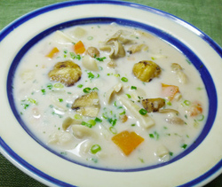

栗ときのこの
シーフードチャウダー
シーフードチャウダー
- 調理時間：30 分
- （一人当たり）
- カロリー：205kcal
- たんぱく質：13.1g
- 脂質：6.0g
- 塩分：1.3g


＜４人分＞
- シーフードミックス（冷凍）
- 150g
- タマネギ
- 1個
- ニンジン
- 1/2本
- ジャガイモ
- 1個
- マイタケ
- 1/2パック
- シメジ
- 1/2パック
- 栗
- 150g
- 青ネギ
- 少々
- 植物油
- 小さじ1
- スープの素
- 1個
- 牛乳（豆乳でもよい）
- 200ml
- 塩、コショウ
- 少々


- シーフードミックスは熱湯でサッと下茹でしておく。
- 栗は渋皮まで包丁でむいて、下茹でする。
- ジャガイモは皮をむいて適当な大きさに切り、水にさらす。タマネギは薄切りにする。
ニンジンはイチョウ切りにする。
マイタケ・シメジは石づきをとり、手でほぐす。青ネギは小口切りにする。 - 鍋に油をしき、タマネギを炒め、ジャガイモ、ニンジン、マイタケ、シメジ、シーフードミックスを加えて炒め合わせる。
- ヒタヒタのお水、スープの素を加えて煮る。すべての材料がやわらかく煮えたら栗を入れてさらに煮る。
- 仕上げに牛乳を加え、塩、コショウで味をととのえる。お皿によそい青ネギを散らす。
栗ときのこのシーフードチャウダー
天高く馬肥ゆる秋。秋は厳しい冬に備え体力を蓄える季節です。たくさんの食物が収穫期となり、栗もそのひとつでしょう。
間違えやすいのですが、栗はアーモンドやピーナッツの仲間で種子の部分。発芽するためのエネルギーの塊ですから、たくさんの栄養素と生命力を持ち合わせています。しかし、ナッツとは異なり脂肪分が少なく、デンプン質やビタミンCが多く、消化に良いため、どちらかというと芋やカボチャと類似して取り上げられることが多いようです。茹で栗は自然派おやつにオススメです。
実りの秋。おいしいものが多すぎて、体重オーバーにならないように食べ過ぎには気をつけましょう。